BEST FRIEND.
Onboarding complet
Piloter les locations simplement
Le guide complet pour prendre Best Friend en main
Connexion, réservations, planning, missions terrain, accès, finances et sauvegardes — expliqué écran par écran.
Responsable & équipe terrainOrdinateur & mobileEspace privé
BEST FRIEND.
01 · Comprendre l’espace
Un cockpit privé, avec une vue adaptée à chaque rôle
L’adresse du site ouvre un portail sécurisé. Les données ne sont affichées qu’après identification d’une adresse autorisée.
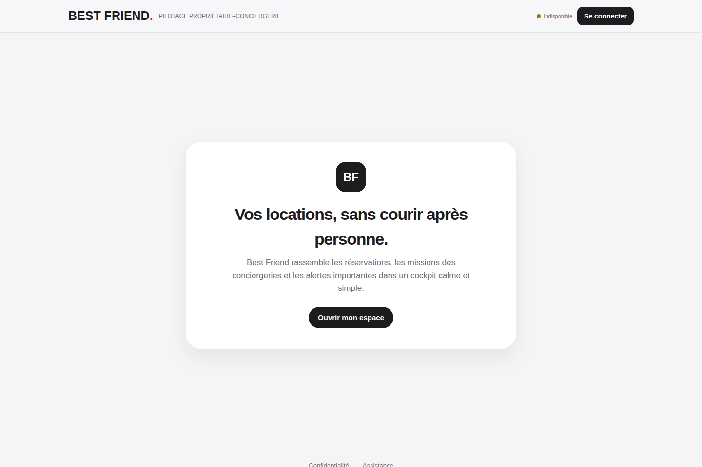
Propriétaire / AdminTous les biens, les accès, les sauvegardes et les chiffres.
GestionnaireTous les biens et le pilotage quotidien, avec gestion limitée des accès.
ConciergeSeulement les biens attribués et les actions utiles sur le terrain.
Lecture seuleConsulte les informations autorisées sans pouvoir les modifier.
Principe clé : une personne ne crée pas elle-même son espace. Le responsable ajoute son email, choisit son rôle et lui attribue les biens nécessaires.
Parcours normal
1. Accès ajouté
Par le responsable
›
2. Lien reçu
Par email
›
3. Espace ouvert
Selon le rôle
BEST FRIEND.
02 · Première connexion
Se connecter sans mot de passe
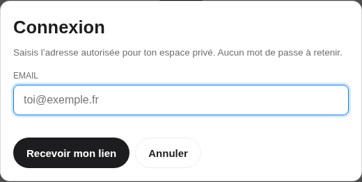
1Ouvrir l’espace privé
Choisis Ouvrir mon espace ou Se connecter.
2Saisir l’email autorisé
Utilise exactement l’adresse ajoutée par le responsable.
3Demander le lien
Appuie sur Recevoir mon lien. Le message reste volontairement neutre pour protéger les comptes.
4Ouvrir l’email
Clique le lien sécurisé reçu. Il ouvre directement le bon espace ; aucun mot de passe n’est à mémoriser.
Email absent ? Vérifie les indésirables, l’orthographe de l’adresse et que l’accès a bien été ajouté. Puis demande un nouveau lien.
Règles de sécurité
Lien personnel
Ne transfère jamais l’email de connexion à une autre personne.
Appareil partagé
Utilise Se déconnecter dès que tu as fini.
Accès perdu
Le responsable peut retirer l’accès immédiatement depuis Biens.
Bon réflexe : ajoute le site à l’écran d’accueil après la première connexion. L’ouverture suivante ressemble à celle d’une application.
BEST FRIEND.
03 · Tableau de bord
Commencer chaque journée par l’Accueil
1Focus du jourDéparts, arrivées et ménages à faire immédiatement.
2RaccourcisCréer une réservation, ouvrir l’agenda ou une location.
3Santé opérationnelleConflits, retards, montants manquants et règlements à surveiller.
4Messages prêtsCopier un message voyageur ou l’ouvrir dans WhatsApp.
À traiter en priorité : les blocs rouges signalent une urgence ; les blocs orange une donnée ou une action à vérifier. Une santé à 100 % signifie qu’aucune anomalie connue n’est détectée.
Utiliser Best Friend comme une application mobile
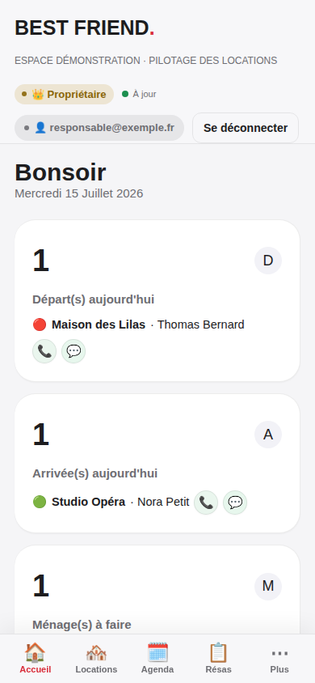
Navigation du bas
Accueil, Locations, Agenda et Résas restent accessibles au pouce. Plus ouvre Interventions, Synthèse ou Biens selon le rôle.
Installer sur iPhone / iPad
- Ouvre le site dans Safari.
- Touche Partager.
- Choisis Sur l’écran d’accueil, puis confirme.
Installer sur Android
- Ouvre le site dans Chrome.
- Ouvre le menu du navigateur.
- Choisis Installer l’application ou Ajouter à l’écran d’accueil.
Pas de bouton d’installation ? Utilise le site normalement, puis réessaie après une première connexion. Les intitulés peuvent varier selon le téléphone.
Conseil terrain : autorise l’appareil photo lorsque Best Friend le demande ; il sert uniquement à joindre une preuve à une intervention.
BEST FRIEND.
05 · Locations
Voir l’état de tous les biens en un coup d’œil
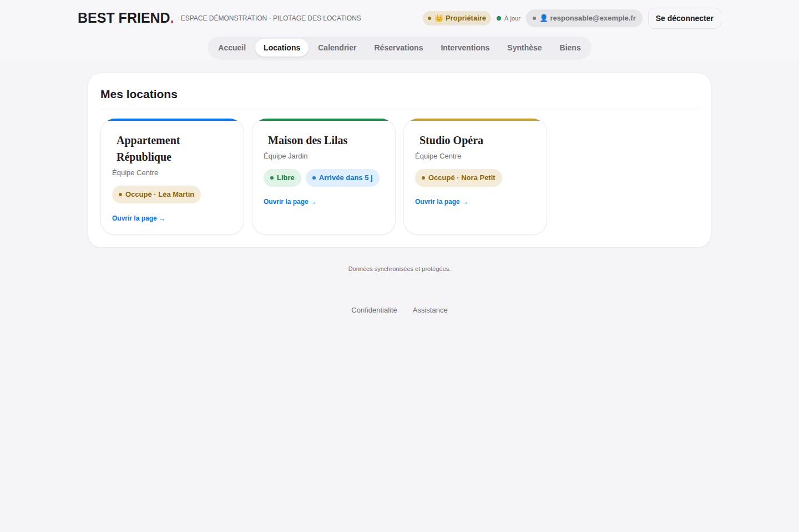
Libre / occupé
Le statut est calculé à partir des réservations. Une arrivée proche apparaît directement sur la carte.
Gestionnaire
Le sous-titre rappelle l’équipe ou la personne chargée du bien.
Ouvrir la fiche
Clique une carte pour voir les prochaines dates, les actions rapides et l’historique du logement.
Ce que voit chaque personne
| Rôle | Vue Locations | Peut agir ? |
|---|
| Responsable / gestionnaire | Tous les biens actifs | Oui, sur tous les biens |
| Concierge | Uniquement les biens attribués | Oui, sur ses biens |
| Lecture seule | Uniquement les biens attribués | Non |
Un bien n’est plus exploité ? Désactive-le au lieu de supprimer son historique. S’il possède déjà des réservations ou interventions, Best Friend l’archive automatiquement.
BEST FRIEND.
06 · Fiche d’un bien
Agir depuis la fiche de la location
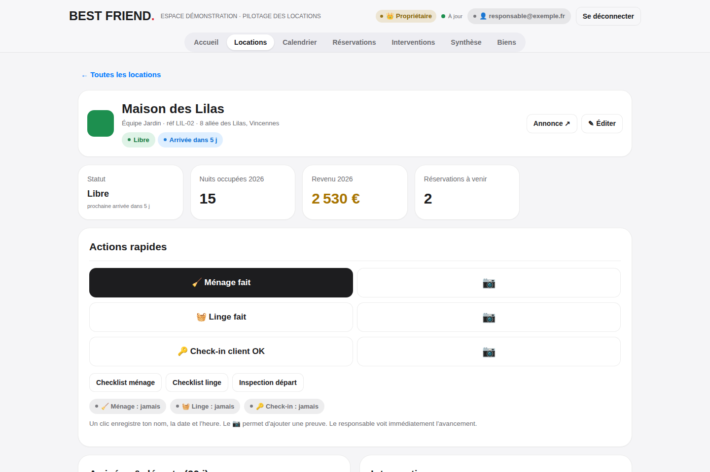
1. Vérifier le contexte
Adresse, statut actuel, prochain séjour, revenu annuel et réservations à venir.
2. Enregistrer une action
Ménage fait, Linge fait ou Check-in OK ajoute automatiquement le nom, la date et l’heure.
3. Suivre l’historique
Les interventions, arrivées, départs et prochaines réservations restent regroupés sur la même page.
Bouton appareil photo : utilise-le à la place du bouton simple si une preuve est demandée. Jusqu’à trois images peuvent accompagner l’action.
Valider le travail terrain de façon traçable
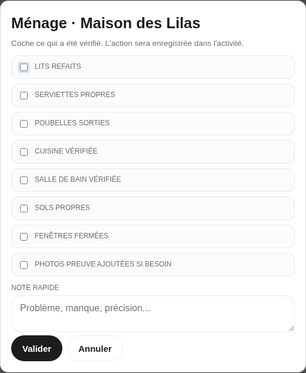
1Choisir la bonne checklist
Ménage, linge, check-in ou inspection de départ.
2Cocher uniquement le vérifié
Les points non cochés sont conservés comme éléments à revoir.
3Ajouter une note utile
Décris un manque, un dégât ou une action restante, sans information superflue.
4Valider
L’action rejoint l’activité et la fiche du bien avec l’auteur et l’horodatage.
Ne valide pas “tout est fait” si un point reste à traiter. Laisse-le décoché et précise la situation dans la note.
Preuves photo : la bonne pratique
Photographier l’essentiel
Une vue nette et utile vaut mieux qu’une série d’images identiques.
Éviter les données sensibles
Ne cadre pas de document d’identité, code d’accès ou objet personnel du voyageur.
Connexion nécessaire
Attends la confirmation d’enregistrement avant de fermer l’écran.
Confidentialité : l’image est compressée avant l’envoi et stockée dans un espace privé. Son accès est réservé aux comptes autorisés.
BEST FRIEND.
08 · Réservations
Créer, corriger et retrouver une réservation
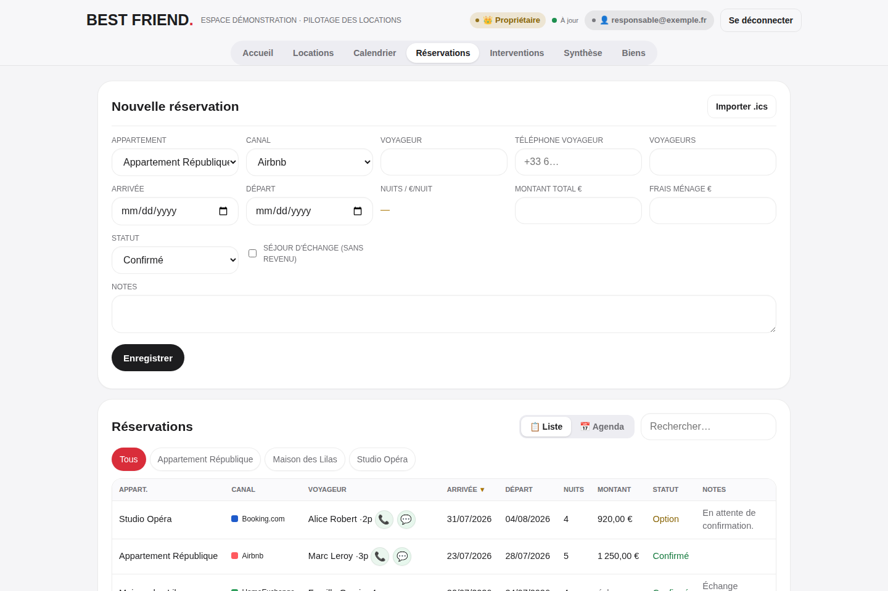
Créer
- Choisis le bien et le canal.
- Ajoute voyageur, téléphone, dates et nombre de personnes.
- Renseigne le montant, les frais de ménage et le statut.
- Active Séjour d’échange si aucun revenu ne doit être compté.
- Enregistre.
Corriger ou retrouver
- Utilise les filtres par bien ou la recherche.
- Clique la ligne concernée pour la modifier.
- Choisis Agenda pour une lecture chronologique.
- Annule une réservation avec le statut Annulé afin de conserver la trace.
Chevauchement détecté : vérifie les dates, le bien et le statut. Le calendrier affiche un liseré rouge tant que deux séjours occupent les mêmes nuits.
Messages voyageurs : le tableau de bord prépare des textes à partir du nom, des dates et de l’adresse. Relis toujours le message avant de l’envoyer.
BEST FRIEND.
09 · Calendrier et iCal
Lire l’occupation et importer les calendriers externes
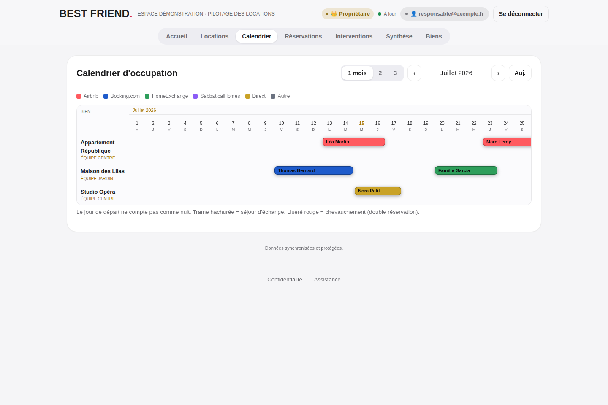
Calendrier d’occupation
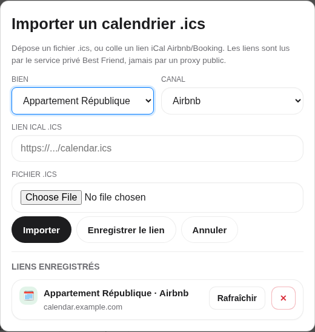
Import et lien iCal
Lire le calendrier
- Chaque couleur correspond à un canal.
- Une trame hachurée indique un échange.
- Le jour de départ n’est pas compté comme une nuit.
- Choisis 1, 2 ou 3 mois et utilise les flèches pour naviguer.
Importer un calendrier
- Dans Réservations, ouvre Importer .ics.
- Choisis le bien et le canal.
- Dépose le fichier .ics, ou colle son lien privé HTTPS.
- Importer lit maintenant ; Enregistrer le lien permet les rafraîchissements suivants.
Le lien iCal est confidentiel. Ne le publie pas et ne le colle dans aucun outil public. Best Friend le lit via son service privé.
Après un import : contrôle le nombre d’éléments ajoutés, ouvre le calendrier et vérifie au moins une arrivée et un départ. Les événements déjà connus sont mis à jour au lieu d’être dupliqués.
BEST FRIEND.
10 · Interventions
Planifier les missions et suivre les règlements
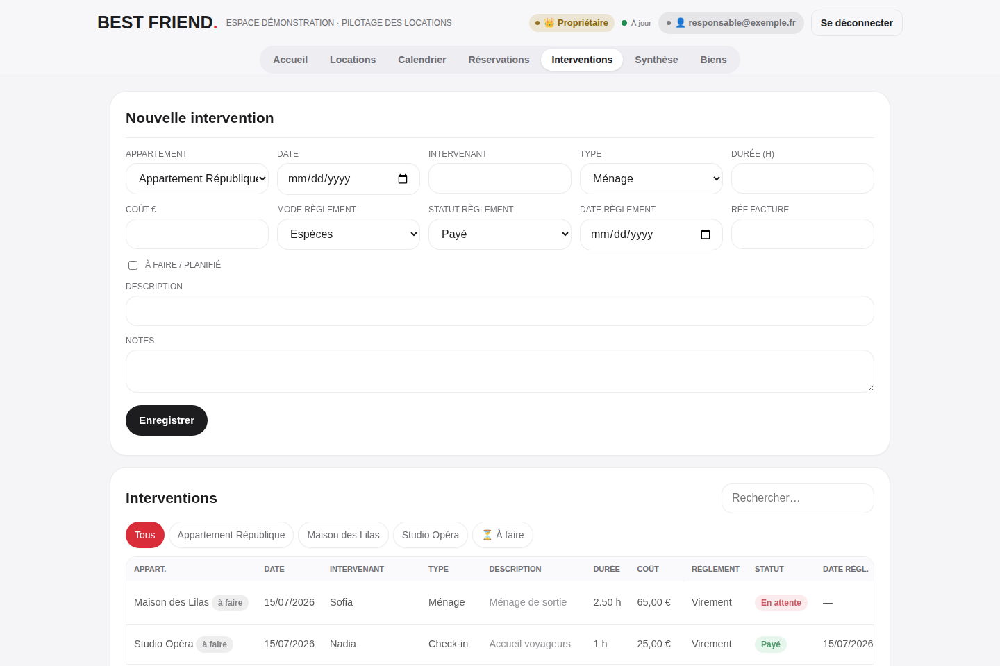
À faire
Coche À faire / planifié. La tâche remonte dans les priorités et reste ouverte jusqu’à sa mise à jour.
Fait
Décoche la planification, confirme la date, l’intervenant, la durée et la description.
À régler
Renseigne le coût, le mode, le statut, la date et la référence de facture. Le reste dû apparaît à l’accueil et en synthèse.
Informations minimales recommandées
BienDateIntervenantTypeDescriptionÉtatCoût si applicableStatut de règlement
Action rapide ou intervention ? Utilise la fiche du bien pour un ménage, un linge ou un check-in simple. Utilise Interventions pour planifier, détailler, chiffrer ou facturer une mission.
Avant suppression : préfère corriger la ligne si l’intervention a réellement eu lieu. La trace opérationnelle et financière reste ainsi cohérente.
BEST FRIEND.
11 · Synthèse
Lire les performances sans refaire les calculs
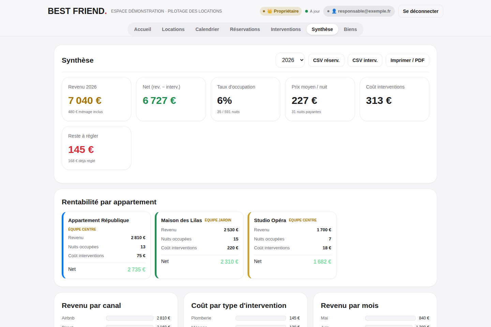
1Revenu et netRevenus de réservation moins coûts d’intervention.
2Occupation et prix moyenNuits occupées et revenu moyen par nuit payante.
3Reste à réglerInterventions payantes encore en attente ou partielles.
4Détail par bienRevenu, occupation, coûts et net pour chaque location.
Exports : les boutons CSV ouvrent les réservations ou interventions dans un tableur. Imprimer / PDF produit une synthèse lisible à partager en interne.
Les chiffres dépendent des saisies. Vérifie les montants, les statuts annulés, les séjours d’échange et les coûts avant une clôture mensuelle.
Administrer l’espace sans réglage technique
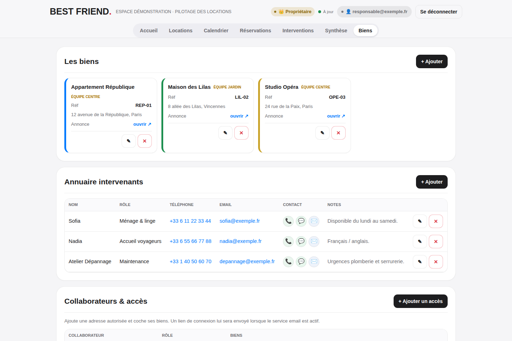
Les biens
Ajoute ou corrige le nom, la référence, le gestionnaire, l’adresse, l’annonce, la couleur et l’état actif.
Annuaire
Centralise intervenant, rôle, téléphone, email et notes. Les boutons appel, WhatsApp et email évitent la ressaisie.
Collaborateurs
Ajoute une adresse nominative, choisis son rôle et attribue uniquement les biens nécessaires.
Règle d’attribution recommandée
Besoin réel
Que doit faire la personne ?
›
Rôle minimal
Concierge ou lecture si possible
›
Biens nécessaires
Pas d’accès inutile
Départ d’un collaborateur : retire son accès immédiatement. Ne réutilise jamais son adresse pour une autre personne.
Deux formulaires à connaître
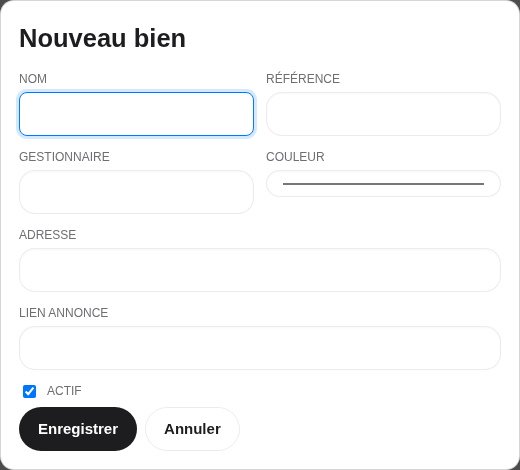
Ajouter un bien
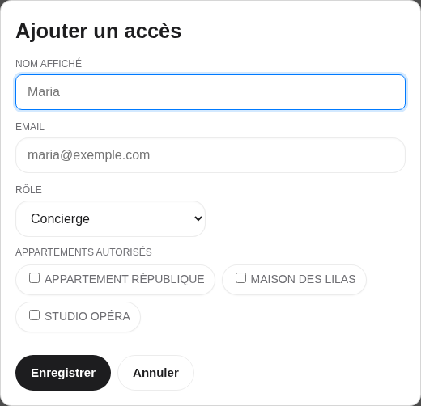
Ajouter un accès
Nouveau bien
- Donne un nom reconnaissable.
- Ajoute une référence interne courte.
- Indique le gestionnaire et l’adresse.
- Colle le lien de l’annonce si utile.
- Choisis une couleur distincte pour le calendrier.
- Laisse Actif coché, puis enregistre.
Nouvel accès
- Saisis le nom et l’email exacts.
- Choisis le rôle minimal nécessaire.
- Pour concierge ou lecture, coche les biens autorisés.
- Enregistre : l’adresse devient autorisée et l’invitation peut être envoyée.
- Vérifie ensuite son statut dans la liste.
Gestionnaire, admin et propriétaire : ces rôles ont accès à tous les biens. Les cases de biens servent surtout aux rôles concierge et lecture seule.
Avant d’inviter : relis l’adresse email. Une faute crée un accès inutilisable et peut envoyer l’invitation au mauvais destinataire.
Protéger les données et travailler sans mauvaise surprise
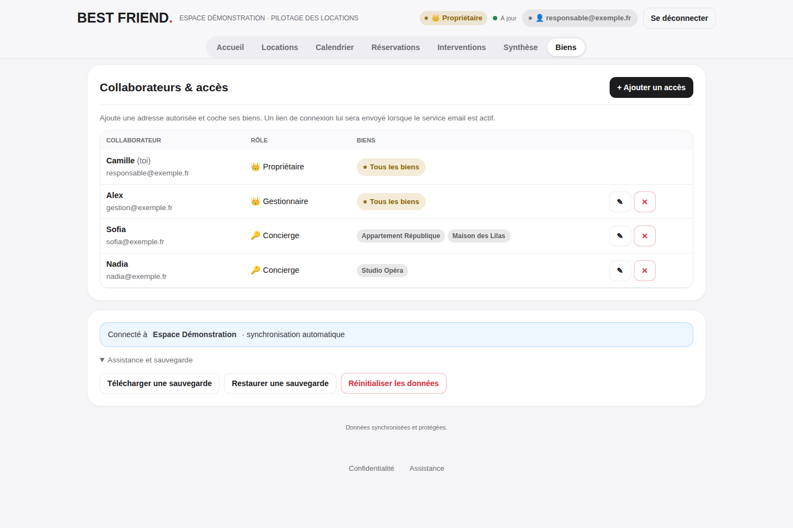
Télécharger une sauvegarde
- Ouvre Biens → Assistance et sauvegarde.
- Choisis Télécharger une sauvegarde.
- Conserve le fichier dans un emplacement privé.
À faire avant une reprise massive ou une modification importante.
Restaurer proprement
- Choisis Restaurer une sauvegarde.
- Lis le résumé des éléments détectés.
- Confirme seulement si l’espace et les volumes sont corrects.
- Utilise Annuler la dernière restauration si nécessaire.
Mode hors ligne
Connexion perdue
Le statut affiche Hors-ligne
›
Lecture disponible
Dernières données connues
›
Retour en ligne
Resynchronisation automatique
Hors ligne = lecture seule. Reconnecte-toi avant toute création ou modification. Best Friend annule les écritures hors ligne pour éviter les divergences silencieuses.
Réinitialiser les données est une action exceptionnelle et destructrice. Télécharge d’abord une sauvegarde et lis la confirmation complète.
BEST FRIEND.
15 · Mise en route
Checklist du premier jour
✓1. Créer les biens
Nom, référence, gestionnaire, adresse, lien et couleur.
✓2. Ajouter les intervenants
Coordonnées et rôle opérationnel.
✓3. Importer ou saisir les réservations
Puis contrôler les dates dans le calendrier.
✓4. Créer les accès nominatifs
Rôle minimal et biens strictement nécessaires.
✓5. Faire un test terrain
Connexion concierge, fiche du bien, checklist et preuve photo.
✓6. Vérifier les chiffres
Montants, échanges, coûts et reste à régler.
✓7. Télécharger une sauvegarde initiale
Point de référence avant l’exploitation courante.
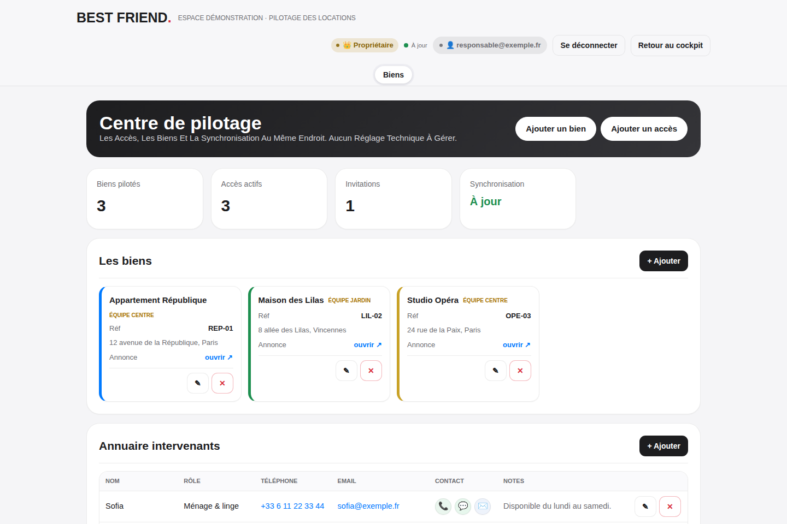
Dépannage express
| Situation | Action |
|---|
| Lien de connexion absent | Indésirables → email exact → accès présent → nouveau lien. |
| Aucun bien visible | Le responsable vérifie les biens attribués à cette adresse. |
| Écran “Hors-ligne” | Rétablir le réseau, attendre “À jour”, puis recommencer l’action. |
| Chiffre incohérent | Contrôler dates, statut, échange, montant et coûts associés. |
| Problème persistant | Noter le message exact et le moment, puis ouvrir Assistance. |
Pour demander de l’aide : indique l’écran, l’action, le message exact et l’heure. Ne transmets ni lien de connexion, ni calendrier iCal privé, ni donnée sensible.